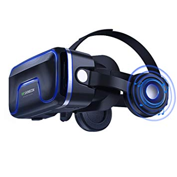
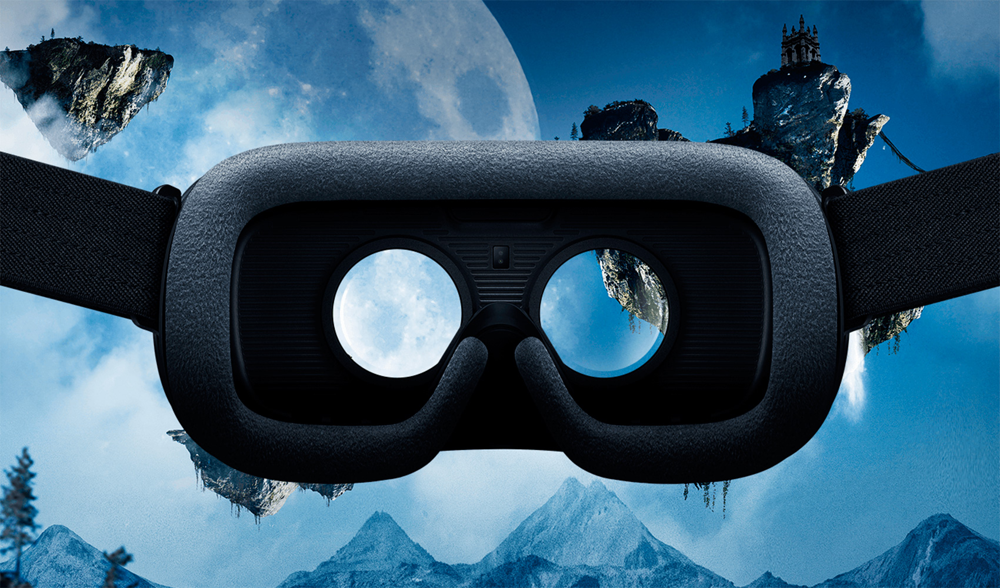

Para visión
 La realidad virtual en el área de la visión trabaja básicamente con dos tipos de implementos: cascos y boom, este último es un equipo que consiste en un brazo mecánico que sostiene un display a través del cual al girarlo se puede observar el entorno del mundo virtual en el cual se está; debido a que su peso es soportado por el brazo mecánico y no por el usuario, como ocurre con el casco, este puede ser un equipo de mayor complejidad y contenido electrónico, lo cual se traduce en ventajas tales como la obtención de una mejor solución. A continuación presentamos algunas características de estos equipos.
Visión estereoscópica:
Es la sensación de ver una determinada imagen en 3 dimensiones, esto se logra haciendo una representación igual para cada ojo de la imagen que se va a observar, estas representaciones son posteriormente proyectadas desde un mismo plano y separadas una distancia que está determinada por la distancia a la cual se encuentra el observador del plano de las imágenes. Desde este punto de vista, también existen equipos de visión monocular a través de los cuales se visualizan los objetos en la forma habitual.
Binoculares:
Son equipos que constan de una pantalla individual para cada ojo, para el funcionamiento de la visión estereoscópica, es necesario tener un equipo que tenga esta característica; para equipos de visión monoscópica esta característica es opcional. Así mismo, también existen equipos monoculares, los cuales constan de una sola pantalla para ambos ojos.